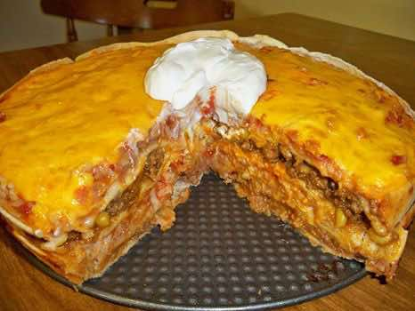

MEXICAN TORTILLA CASSEROLE Recipe - (3.9/5)
Main DishCasserole
PrepPT0S
CookPT0S

Ingredients
- 1 lb. ground beef
- 1/2 cup diced onion
- 1 pack taco seasoning mix
- 2 cups shredded cheddar cheese
- 1 can refried beans (thet spread easier if you warm them in microwave)
- 1 cup prepared rice (I used Minute Rice)
- 1 can Mexican blend corn (DRAINED)will only use about 1/2 can
- 4-5 large flour tortillas
- 8 oz of thick chunky salsa (your choice mild or hot)
Directions
- Spray a spring form, round cake pan or casserole with cooking spray
- Brown ground beef ,and onion and drain
- Add taco seasonings and cook according to package direction
- Lay 1 tortilla in bottom of baking dish and spread 1/3 of bean on it ,top with 1/3 of the meat and sprinkle on some cheese .
- 2nd layer tortilla, 1/2 the rice, 1/2 salsa, 1/2 the corn and cheese
- 3rd layer tortilla, 1/3 beans ,1/3meat, cheese
- 4 layer tortilla . beans ,meat, corn, rice, salsa and cheese
- Bake covered with foil at 350 for about 40 minutes uncover and bake 10-15 minutes longer. let sit 5 minutes before cutting . After baking top with sour cream,diced onion and shredded lettuce if desired
Source
https://www.keyingredient.com/recipes/1670895035/mexican-tortilla-casserole/
This page includes Schema.org Recipe structured data for recipe importers.